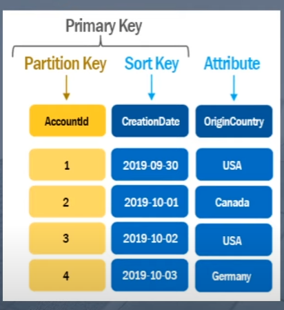

|
i morgen |
aws:dynamo db:walkthrough global secondary index

Senario: Table is defined as shown. How to query Forum Name and Subject
Option 1 (naive approach)
- Scan + FilterExpression("OriginCountry" == "Germany")
- This will work, but a scan operation scans all rows and this is time and $$ prohibitive
Option 2 (GSI)
- GSI's allow you to query for attributes of a row that are not the partition key you originally selected
- DynamoDBQueryExpresssion<Account> query =
new DynamoDBQueryExpresssion<Account>()
.withHashValues(account)
.withIndexName("OriginCountry")
.withLimit(resultLimit)